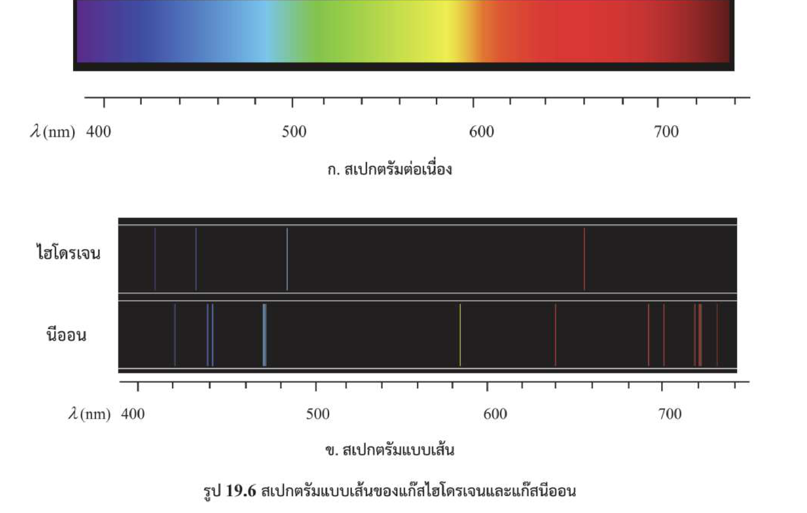
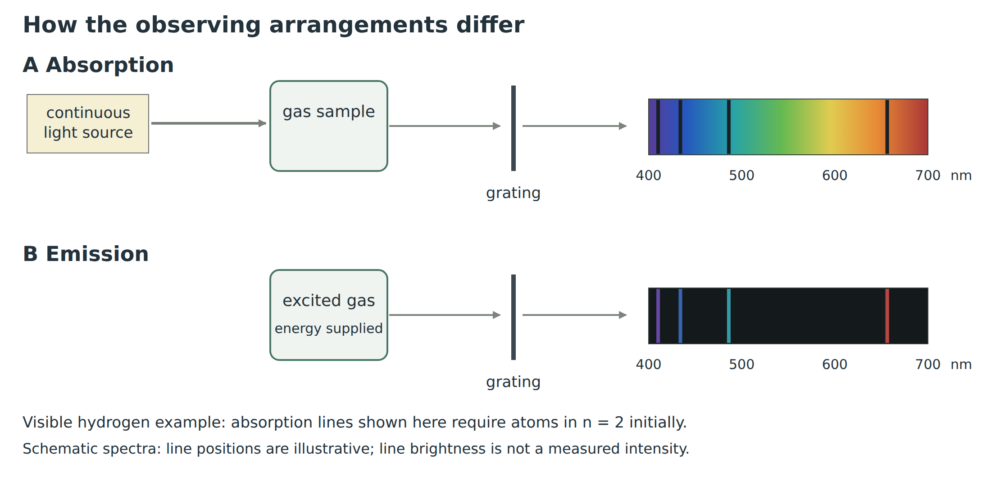
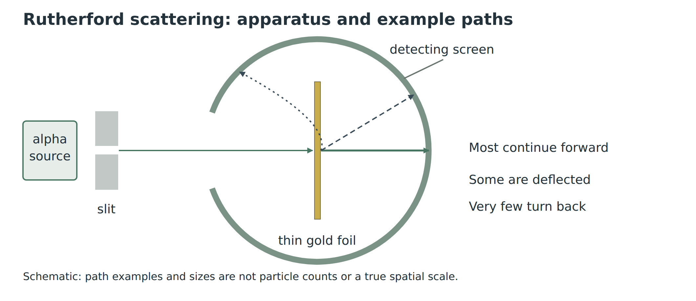
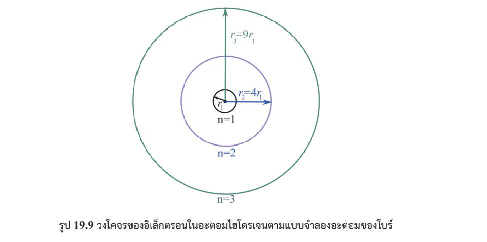
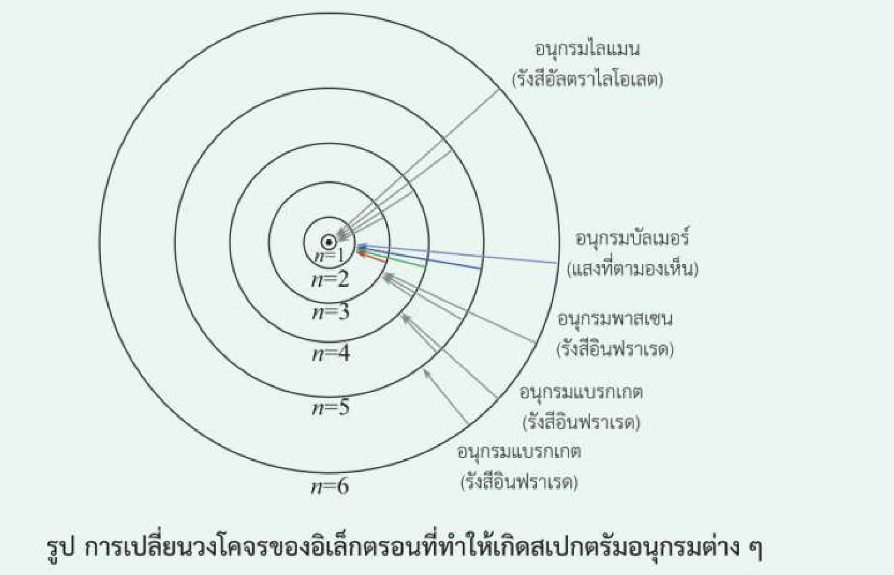
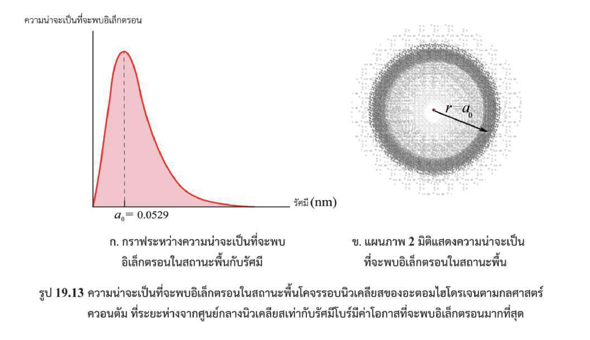
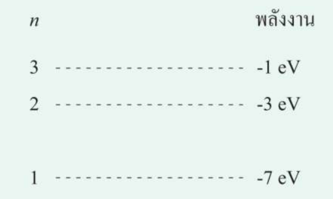
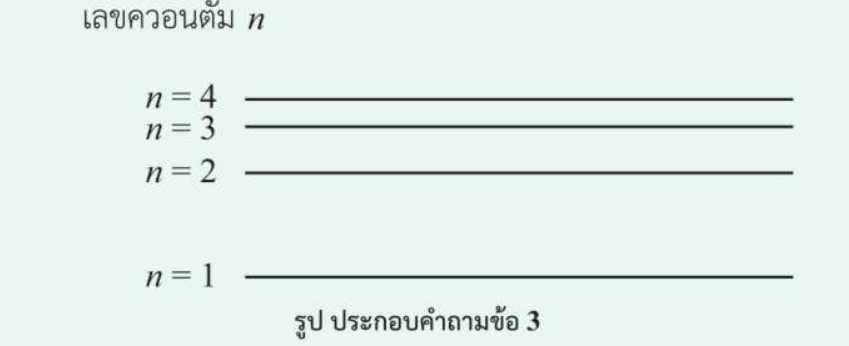
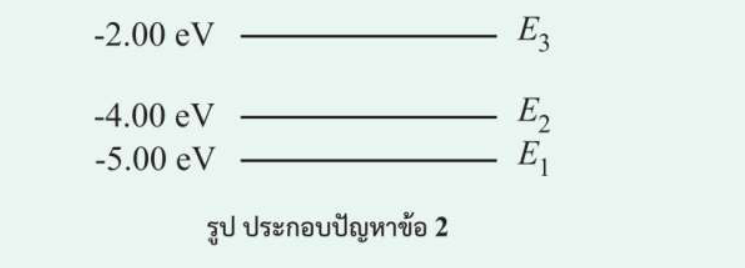
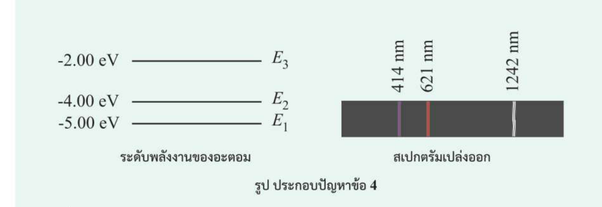

ฟิสิกส์ บทที่ 19 • 19.1 ตอน 2
ทฤษฎีอะตอมของโบร์และสเปกตรัมอะตอม
เริ่มจากปรากฏการณ์สเปกตรัมจริง แล้วใช้การคำนวณเพื่ออธิบายทฤษฎี
Learning · จากสเปกตรัมสู่ทฤษฎีและสมการ
1. ทำไมอะตอมจึงเปล่งและดูดกลืนแสงเป็นเส้น?
จากการทดลองแยกแสง: หลอดไส้ร้อนให้สเปกตรัมต่อเนื่อง แต่แก๊สเจือจางที่ถูกกระตุ้นให้เส้นสว่างเฉพาะบางความยาวคลื่น และเมื่อแสงต่อเนื่องผ่านแก๊สเย็นกว่าอาจเห็นเส้นมืดที่แก๊สดูดกลืน


คำถามนำ: ทำไมอะตอมของธาตุเดียวกันจึงมีตำแหน่งเส้นสว่างและเส้นมืดเฉพาะตัว?
อะตอมเปล่งหรือดูดกลืนโฟตอนได้เฉพาะพลังงานที่ตรงกับผลต่างระดับพลังงานที่อนุญาต
2. ทวนแบบจำลองอะตอมอย่างรวดเร็ว
แบบจำลองอะตอมเปลี่ยนตามหลักฐานทดลอง ไม่ใช่ข้อสรุปที่เกิดขึ้นพร้อมกันทั้งหมด
| แบบจำลอง | แนวคิดสำคัญ | หลักฐาน / ข้อจำกัด |
|---|---|---|
| ดอลตัน | สสารประกอบด้วยอะตอม | ยังไม่อธิบายอนุภาคภายในอะตอม |
| ทอมสัน | อิเล็กตรอนอยู่ในบริเวณประจุบวกกระจาย | รู้จักอิเล็กตรอน แต่ไม่อธิบายการกระเจิงแอลฟามุมใหญ่ |
| รัทเทอร์ฟอร์ด | นิวเคลียสเล็ก มีประจุบวกและมวลเกือบทั้งหมด | ผลการยิงแอลฟาผ่านแผ่นทองคำ; ยังอธิบายความเสถียรและสเปกตรัมเส้นไม่ได้ |
| โบร์ | อิเล็กตรอนมีระดับพลังงานที่อนุญาต | อธิบายเส้นสเปกตรัมของไฮโดรเจนได้ |

แรงไฟฟ้าทำให้อนุภาคแอลฟาที่ผ่านใกล้นิวเคลียสเบนได้โดยไม่ต้องชน แต่แบบจำลองคลาสสิกที่ให้อิเล็กตรอนโคจรรอบนิวเคลียสยังมีปัญหาเรื่องการแผ่รังสีและอธิบายเส้นสเปกตรัมไม่ได้
หลักฐานการกระเจิงสนับสนุนนิวเคลียส แต่ยังต้องอธิบายความเสถียรของอะตอมและสเปกตรัมเส้น
3. สมมติฐานของโบร์และสมการตั้งต้น
โบร์เสนอว่าอิเล็กตรอนอยู่ในสถานะคงตัวที่อนุญาต \(n=1,2,3,\ldots\) โดยไม่แผ่รังสีระหว่างอยู่ในสถานะนั้น เมื่อเปลี่ยนระดับจึงดูดกลืนหรือเปล่งโฟตอน
สำหรับไฮโดรเจน ให้ \(r_n\) เป็นรัศมีวงโคจรที่ระดับ \(n\) และ \(v_n\) เป็นอัตราเร็วของอิเล็กตรอน สองเงื่อนไขที่ใช้คำนวณคือ
เราจะใช้สมการ (1) และ (2) จัดรูปให้เห็นที่มาของ \(r_n\), \(v_n\) และ \(E_n\) โดยไม่ต้องจดการพิสูจน์ยาว
สถานะที่อนุญาตมี n เป็นจำนวนเต็มบวก: n=1 สถานะพื้น; n=2 สถานะกระตุ้นที่หนึ่ง; ระหว่างอยู่ในสถานะคงตัวไม่แผ่รังสี
4. พิสูจน์รัศมีวงโคจร \(r_n\) และอัตราเร็ว \(v_n\)
ใช้สมการ (1) และ (2) โดย จัดรูปจากสมการ (1) และ (2) ทีละขั้น ก่อนแทนค่าคงตัว
แทนค่าคงตัวในหน่วย SI: \(\hbar=1.055\times10^{-34}\,\mathrm{J\,s}\), \(k=8.99\times10^9\,\mathrm{N\,m^2/C^2}\), \(m_e=9.11\times10^{-31}\,\mathrm{kg}\), \(e=1.602\times10^{-19}\,\mathrm C\)
อัตราเร็วจากสมการ (1) และ (2) โดยแทนค่ารัศมีใน (1) หรือจัดรูปกำจัด \(r_n\):

r_n แปรตาม n² ส่วน v_n แปรผกผันกับ n; ระดับกระตุ้นที่สองคือ n=3
5. พลังงานรวม \(E_n\) และที่มาของ \(-13.6\,\mathrm{eV}\)
เราใช้รัศมี \(r_n\) ที่เพิ่งพิสูจน์ แทนลงในพลังงาน ไม่ใช่เริ่มจาก \(r_1\) แล้วบอกผลลัพธ์ทันที
เมื่อแทน n ในสูตรพลังงานของไฮโดรเจน จะเห็นความสัมพันธ์ K, U, E ชัดจากตาราง ไม่ต้องท่องแยกสามสูตรโดยไม่เข้าใจ
| ระดับ n | \(K_n\) (eV) | \(U_n\) (eV) | \(E_n=K_n+U_n\) (eV) |
|---|---|---|---|
| 1 | +13.6 | −27.2 | −13.6 |
| 2 | +3.40 | −6.80 | −3.40 |
| 3 | +1.51 | −3.02 | −1.51 |
ทุกระดับมีอัตราส่วนเดียวกัน: \(U_n/K_n=-2\), \(E_n/K_n=-1\) และ \(U_n/E_n=2\) เพราะสมการข้างบนบังคับความสัมพันธ์นี้
สูตรสำคัญพร้อมใช้สำหรับไฮโดรเจน
พลังงานรวมเป็นลบเพราะอิเล็กตรอนยังถูกยึดเหนี่ยวเมื่อเทียบกับอิเล็กตรอนอิสระที่ \(E=0\)
K เป็นบวก U เป็นลบ และ E รวมติดลบ; ยิ่ง n สูง E ยิ่งเข้าใกล้ 0 จากด้านลบ
6. การดูดกลืนและการเปล่งโฟตอน
เมื่ออิเล็กตรอนเปลี่ยนระดับพลังงาน อะตอมดูดกลืนโฟตอนเพื่อขึ้นระดับ หรือเปล่งโฟตอนเมื่อกลับลงระดับ สเปกตรัมจึงมีเฉพาะบางความยาวคลื่น

พิสูจน์สมการไรด์เบิร์กจากพลังงานของโบร์ ใช้สูตรพลังงานของไฮโดรเจนที่พิสูจน์ไว้ในข้อ 5 โดยให้ \(E_0=2.18\times10^{-18}\,\mathrm J\)
เมื่ออิเล็กตรอนลดระดับจาก \(n_i\) ไปยัง \(n_f\) โดย \(n_i>n_f\) อะตอมเปล่งโฟตอนที่มีพลังงานเท่ากับผลต่างพลังงานของสองระดับ
แทนสูตรพลังงานของโบร์
จัดรูปสมการ
แทนค่าคงตัวในหน่วย SI ใช้ \(h=6.626\times10^{-34}\,\mathrm{J\,s}\) และ \(c=3.00\times10^8\,\mathrm{m/s}\)
การแทนค่าที่ปัดเศษให้ \(1.10\times10^7\,\mathrm{m^{-1}}\); เมื่อใช้ค่าคงตัวละเอียดขึ้น มักใช้ \(R_H\approx1.0974\times10^7\,\mathrm{m^{-1}}\) ในโจทย์ระดับนี้
จึงได้สมการไรด์เบิร์ก
สมการในรูปนี้ใช้การเปล่งโฟตอนจากระดับสูงลงสู่ระดับต่ำ ส่วนการดูดกลืนให้ใช้ผลต่างพลังงานที่เป็นบวกในทิศทางย้อนกลับ
อะตอมหนึ่งตัวที่ลดระดับตรง \(3\to1\) เปล่งโฟตอนหนึ่งตัว แต่ถ้าผ่าน \(3\to2\to1\) จะเปล่งสองตัว สำหรับอะตอมจำนวนมากที่เกิดการเปลี่ยนระดับได้ครบทุกคู่ อาจพบเส้นสเปกตรัมได้ \(N(N-1)/2\) เส้น
ลูกศรลงคือเปล่งแสง ลูกศรขึ้นคือดูดกลืนแสง; ช่องว่างพลังงานมากให้ความถี่สูงและความยาวคลื่นสั้น
7. อนุกรมสเปกตรัมของไฮโดรเจน
ไฮโดรเจนมีหลายอนุกรม เพราะอิเล็กตรอนลดระดับมาสู่ ระดับปลาย \(n_f\) เดียวกัน แต่เริ่มจากระดับสูง \(n_i\) ต่างกัน ชื่ออนุกรมจึงไม่ได้ขึ้นอยู่กับสีเพียงอย่างเดียว
| อนุกรม | ระดับปลาย | บริเวณสเปกตรัม | ความหมาย |
|---|---|---|---|
| ไลมาน (Lyman) | \(n_f=1\) | อัลตราไวโอเลต (UV) | เปล่งแสงเมื่ออิเล็กตรอนลงสู่ระดับพื้น |
| บัลเมอร์ (Balmer) | \(n_f=2\) | แสงที่มองเห็นบางเส้น และ UV ใกล้ขอบอนุกรม | เส้นแดง \(3\to2\) ประมาณ 656 nm |
| พาสเชน (Paschen) | \(n_f=3\) | อินฟราเรด (IR) | การลงสู่สถานะกระตุ้นที่สอง |
| แบรกเกตต์ (Brackett) | \(n_f=4\) | อินฟราเรด (IR) | การลงสู่ระดับที่ 4 |
| ฟุนด์ (Pfund) | \(n_f=5\) | อินฟราเรด (IR) | การลงสู่ระดับที่ 5 |

ภายในอนุกรมเดียวกัน เมื่อ \(n_i\) เพิ่มขึ้น ช่องว่างพลังงานจะเพิ่ม ความยาวคลื่นสั้นลง และเส้นจะอยู่ใกล้กันมากขึ้นจนถึงขอบอนุกรมที่ \(n_i\to\infty\) สำหรับอะตอมไฮโดรเจนเส้นบัลเมอร์บางส่วนอยู่ในช่วงที่มองเห็น แต่ขอบอนุกรมอยู่บริเวณอัลตราไวโอเลต
ข้อจำกัด: โบร์อธิบายไฮโดรเจนและระบบอิเล็กตรอนเดียวได้ดี แต่ไม่ใช่คำอธิบายวงโคจรแน่นอนของอะตอมทั่วไปในทฤษฎีควอนตัมสมัยใหม่

Lyman n_f=1, Balmer n_f=2, Paschen n_f=3, Brackett n_f=4, Pfund n_f=5; จำจากระดับปลายก่อนพิจารณาช่วงคลื่น
Problem · ฝึกจำสูตรและทำโจทย์
เริ่มจากคำถามช่วยจำสูตร ตามด้วยคำถามและแบบฝึกหัด สสวท. ท้ายหัวข้อ–ท้ายบท แล้วฝึกโจทย์แนว A-Level / 9 วิชาสามัญ
Core Memory: สูตรและความสัมพันธ์ที่ต้องจำ
ลดคำถามจุกจิก เหลือเฉพาะสาระสำคัญ การจัดรูปสมการ และอัตราส่วน ฝึกจากความจำก่อนเปิดเฉลย
ฝึกจำ 1
สเปกตรัมเปล่งแสงกับสเปกตรัมดูดกลืนต่างกันอย่างไร?
สเปกตรัมเปล่งแสงมีเส้นสว่างบนพื้นมืด ส่วนสเปกตรัมดูดกลืนมีเส้นมืดบนสเปกตรัมต่อเนื่อง
ฝึกจำ 2
ระบุสถานะพื้น สถานะกระตุ้นที่หนึ่ง และสถานะกระตุ้นที่สองด้วย n
n=1, 2, 3 ตามลำดับ
ฝึกจำ 3
เขียนสูตรรัศมีวงโคจรระดับ n ของไฮโดรเจน และระบุ a₀
แนวคิด: ใช้สูตรจาก Learning และจัดรูปก่อนแทนค่า
ตอบ: rₙ=n²a₀, a₀=5.29×10⁻¹¹ m
ฝึกจำ 4
รัศมีที่ n=4 มากกว่ารัศมีที่ n=1 กี่เท่า? ตั้งสมการ (1), (2) แล้วนำมาหารกัน
แนวคิด: ใช้สูตรจาก Learning และจัดรูปก่อนแทนค่า
ตอบ: 16 เท่า
ฝึกจำ 5
ถ้า rₙ=81a₀ จงจัดรูปสมการแล้วหาค่า n
แนวคิด: ใช้สูตรจาก Learning และจัดรูปก่อนแทนค่า
ตอบ: n=9
ฝึกจำ 6
เขียนสูตรอัตราเร็วโบร์ของไฮโดรเจน พร้อมบอกว่าแปรผันกับ n อย่างไร
แนวคิด: ใช้สูตรจาก Learning และจัดรูปก่อนแทนค่า
ตอบ: vₙ=2.19×10⁶/n m/s; แปรผกผันกับ n
ฝึกจำ 7
เมื่อ n เพิ่มจาก 2 เป็น 6 จงตั้งสมการ (1), (2) แล้วหา v₆/v₂ โดยการหารสมการ
แนวคิด: ใช้สูตรจาก Learning และจัดรูปก่อนแทนค่า
ตอบ: อัตราเร็วใหม่เป็น 1/3 ของเดิม
ฝึกจำ 8
เขียนสูตรพลังงานรวม Eₙ ของไฮโดรเจนและอธิบายสัญลักษณ์ลบ
แนวคิด: ใช้สูตรจาก Learning และจัดรูปก่อนแทนค่า
ตอบ: Eₙ=−13.6/n² eV; พลังงานลบหมายถึงอิเล็กตรอนยังถูกยึดเหนี่ยว
ฝึกจำ 9
ใช้สูตรพลังงานรวมคำนวณ E₂
แนวคิด: ใช้สูตรจาก Learning และจัดรูปก่อนแทนค่า
ตอบ: −3.40 eV
ฝึกจำ 10
ถ้า E=−0.85 eV ให้หา K และ U จากสูตรความสัมพันธ์
แนวคิด: ใช้สูตรจาก Learning และจัดรูปก่อนแทนค่า
ตอบ: K=+0.85 eV, U=−1.70 eV
ฝึกจำ 11
ต้องใช้พลังงานต่ำสุดเท่าไรเพื่อไอออไนซ์ไฮโดรเจนจาก n=4?
แนวคิด: ใช้สูตรจาก Learning และจัดรูปก่อนแทนค่า
ตอบ: 0.85 eV
ฝึกจำ 12
เมื่ออิเล็กตรอนเปลี่ยน 3→2 กับ 2→3 กรณีใดเปล่งแสง กรณีใดดูดกลืน?
3→2 เปล่งแสง; 2→3 ดูดกลืนแสง
ฝึกจำ 13
เขียนความสัมพันธ์ของพลังงานโฟตอนกับความถี่และความยาวคลื่น
แนวคิด: ใช้สูตรจาก Learning และจัดรูปก่อนแทนค่า
ตอบ: Eγ=hf=hc/λ
ฝึกจำ 14
เมื่อพลังงานโฟตอนเพิ่มเป็น 3 เท่า ความยาวคลื่นเปลี่ยนอย่างไร? ตั้งสมการ (1), (2) และหารกัน
แนวคิด: ใช้สูตรจาก Learning และจัดรูปก่อนแทนค่า
ตอบ: ความยาวคลื่นเหลือ 1/3 ของเดิม
ฝึกจำ 15
จับคู่อนุกรม Lyman, Balmer และ Paschen กับระดับปลาย n_f
Lyman: 1, Balmer: 2, Paschen: 3
ฝึกจำ 16
การเปลี่ยนใดในอนุกรมบัลเมอร์ให้ความยาวคลื่นยาวที่สุด? อธิบายด้วยช่องว่างพลังงาน
3→2 เพราะมีผลต่างพลังงานน้อยที่สุดในอนุกรมบัลเมอร์
ฝึกจำ 17
อะตอมจำนวนมากมี 5 ระดับที่เปลี่ยนลงได้ครบทุกคู่ จะมีเส้นสเปกตรัมสูงสุดกี่เส้น?
แนวคิด: ใช้สูตรจาก Learning และจัดรูปก่อนแทนค่า
ตอบ: 10 เส้น
ฝึกจำ 18
ถ้าโจทย์ให้อะตอมสมมติที่ E₁=−6 eV จะใช้สูตร Eₙ=−13.6/n² eV ได้หรือไม่?
ไม่ได้ ต้องใช้ระดับพลังงานที่โจทย์กำหนด
คำถามและแบบฝึกหัด สสวท. ท้ายหัวข้อ–ท้ายบท
คำถามชวนคิด ตรวจสอบความเข้าใจ และแบบฝึกหัด 19.1 ตามด้วยคำถามและแบบฝึกหัดท้ายบท 19 ใช้เลขข้อเดิมของหนังสือ
คำถามชวนคิด · สสวท. หน้า 77
นักเรียนสามารถมองเห็นสเปกตรัมแบบเส้นที่เกิดจากการเปลี่ยนระดับพลังงานจาก n = 7 ไปยัง n = 2 ของอะตอมไฮโดรเจนได้หรือไม่ เพราะเหตุใด
กำหนดช่วงแสงที่มองเห็นประมาณ 400–700 nm ตามโจทย์
แนวคิด: ใช้ความยาวคลื่นเทียบเกณฑ์แสงที่มองเห็นโดยประมาณ 400–700 nm ตามโจทย์
ตอบ: 397 nm อยู่ต่ำกว่า 400 nm เล็กน้อย จัดนอกช่วงตามเกณฑ์โจทย์ แต่ไม่ใช่ขอบเขตการมองเห็นที่ตัดเด็ดขาด
ตรวจสอบความเข้าใจ 19.1 · ข้อ 1 · สสวท. หน้า 80
จงอธิบายเลขควอนตัม และยกตัวอย่างประกอบ
ตอบ: เลข n ในแบบจำลองโบร์เป็นจำนวนเต็มบวก 1,2,3,… ใช้ระบุระดับพลังงานที่อนุญาต เช่น n=1 สถานะพื้น และ n=3 สถานะกระตุ้นที่สอง
ตรวจสอบความเข้าใจ 19.1 · ข้อ 2 · สสวท. หน้า 80
จงอธิบายความแตกต่างระหว่างแบบจำลองอะตอมของทอมสันกับแบบจำลองอะตอมของรัทเทอร์ฟอร์ด
ตอบ: ทอมสันเสนอประจุบวกกระจายอยู่ทั่วอะตอมและมีอิเล็กตรอนฝังอยู่; รัทเทอร์ฟอร์ดพบหลักฐานสนับสนุนนิวเคลียสขนาดเล็กที่รวมประจุบวกและมวลเกือบทั้งหมด
ตรวจสอบความเข้าใจ 19.1 · ข้อ 3 · สสวท. หน้า 80
จงอธิบายความแตกต่างระหว่างสเปกตรัมแบบเส้นและสเปกตรัมต่อเนื่อง พร้อมกับยกตัวอย่างปรากฏการณ์ของการเกิดสเปกตรัมในแต่ละแบบ
ตอบ: สเปกตรัมต่อเนื่องมีสีต่อกันเป็นช่วง เช่น หลอดไส้; สเปกตรัมแบบเส้นมีบางความยาวคลื่น เช่น หลอดแก๊สไฮโดรเจนที่ถูกกระตุ้น
แบบฝึกหัด 19.1 · ข้อ 3 · สสวท. หน้า 80
จงหาอัตราเร็วของอิเล็กตรอนในวงโคจรที่ n
แนวคิด: เริ่มจากความสัมพันธ์ที่แสดงใน Learning จัดรูปหา v ก่อนแทนค่าคงตัว
ตอบ: ไฮโดรเจนมีอัตราเร็วในแบบจำลองโบร์แปรผกผันกับ n
แบบฝึกหัด 19.1 · ข้อ 4 · สสวท. หน้า 80
จะต้องใช้พลังงานอย่างน้อยที่สุดกี่อิเล็กตรอนโวลต์ในการทำให้อิเล็กตรอนในวงโคจรที่สอง (n = 2) หลุดออกจากอะตอมไฮโดรเจนเป็นอิเล็กตรอนอิสระ
แนวคิด: ไอออไนซ์ต้องเพิ่มพลังงานจากระดับเริ่มต้นจนถึง E=0
ตอบ: ต้องใช้พลังงานอย่างน้อย 3.40 eV
แบบฝึกหัด 19.1 · ข้อ 5 · สสวท. หน้า 80
ถ้าอะตอมอยู่ในสถานะถูกกระตุ้น n = 2 จะสามารถปล่อยโฟตอนที่มีพลังงานเท่าใด
ระดับพลังงานตามรูป: n=1: -7 eV; n=2: -3 eV; n=3: -1 eV; เริ่มต้น n=2

แนวคิด: อะตอมสมมติให้ค่า E เอง ห้ามใช้ −13.6/n² ของไฮโดรเจน
ตอบ: เปล่งโฟตอนพลังงาน 4 eV จาก n=2→1 เท่านั้นตามสถานะเริ่มต้น
แบบฝึกหัด 19.1 · ข้อ 6 · สสวท. หน้า 80
อิเล็กตรอนตัวหนึ่งโคจรรอบนิวเคลียสของอะตอมไฮโดรเจน โดยมี n = 3 จงหารัศมีวงโคจร และถ้ากลับสู่สถานะพื้นจะปล่อยคลื่นแม่เหล็กไฟฟ้าที่มีความยาวคลื่นเท่าใด
(ก) รัศมี
แนวคิด: ใช้สูตรไฮโดรเจน; สำหรับความยาวคลื่นต้องพิจารณาว่าเส้นทางใดเกิดได้
ตอบ: รัศมี n=3 เท่ากับ 4.76×10⁻¹⁰ m
(ข) ความยาวคลื่น
แนวคิด: ใช้สูตรไฮโดรเจน; สำหรับความยาวคลื่นต้องพิจารณาว่าเส้นทางใดเกิดได้
ตอบ: ชุดอะตอมอาจให้สามเส้นจากเส้นทางตรงและผ่านระดับกลาง ไม่ใช่โฟตอนสามตัวจากอะตอมเดียวในการลดระดับครั้งเดียว
คำถามท้ายบท 19 · ข้อ 2 · สสวท. หน้า 105
จากการทดลองปล่อยอนุภาคแอลฟาซึ่งมีประจุบวกไปยังแผ่นทองคำบาง พบว่าอนุภาคแอลฟาบางส่วนเบี่ยงเบนไปจากแนวเดิม และบางส่วนสะท้อนกลับออกมา เพราะเหตุใด
ตอบ: อนุภาคแอลฟามีประจุบวกจึงถูกนิวเคลียสประจุบวกผลักได้จากระยะไกล การผ่านใกล้บางครั้งทำให้เบนมากหรือสะท้อนกลับ
คำถามท้ายบท 19 · ข้อ 3 · สสวท. หน้า 105
จงบอกจำนวนเส้นสเปกตรัมทั้งหมดที่อะตอมนี้สามารถเปล่งออกมาได้ เมื่ออะตอมอยู่ในสถานะถูกกระตุ้น
พิจารณาอะตอมจำนวนมากที่เกิดการเปลี่ยนระดับระหว่างคู่ระดับที่เป็นไปได้ทุกคู่

แนวคิด: นับคู่ระดับที่ลดลงได้ในชุดอะตอมจำนวนมาก ไม่ใช่จำนวนโฟตอนของหนึ่งอะตอม
ตอบ: เกิดได้สูงสุด 6 เส้นที่ต่างกัน
แบบฝึกหัดท้ายบท 19 · ข้อ 2 · สสวท. หน้า 106
เมื่อถูกกระตุ้นแล้ว อะตอมปลดปล่อยพลังงานทำให้เกิดสเปกตรัมแบบเส้น 3 เส้น จงระบุค่าความยาวคลื่นทั้งสามเส้น
ระดับพลังงานตามรูป: n=1: -5 eV; n=2: -4 eV; n=3: -2 eV
hc ≈ 1242 eV·nm

แนวคิด: ใช้ช่องว่างพลังงาน 1,2,3 eV จากรูปและเลือกค่า hc≈1242 eV·nm ให้ตรงกับค่าปัดของหนังสือ
ตอบ: ความยาวคลื่นคือ 1242, 621, 414 nm; หากใช้ hc≈1240 ผลจะต่างเล็กน้อย
แบบฝึกหัดท้ายบท 19 · ข้อ 3 · สสวท. หน้า 107
ถ้าอิเล็กตรอนในแบบจำลองอะตอมไฮโดรเจนของโบร์อยู่ห่างจากนิวเคลียสเป็นระยะ 25 เท่าของรัศมีโบร์ แสดงว่าอิเล็กตรอนอยู่ที่ระดับพลังงานเท่าใด
แนวคิด: ใช้สูตรรัศมีเทียบกับ a₀ แล้วจัดรูปหาระดับ
ตอบ: ระดับพลังงาน n=5
แบบฝึกหัดท้ายบท 19 · ข้อ 4 · สสวท. หน้า 107
ถ้าต้องการกระตุ้นอะตอมตามรูปจากสถานะพื้นไปยังสถานะถูกกระตุ้นสูงสุด จะต้องใช้คลื่นแม่เหล็กไฟฟ้าที่มีความยาวคลื่นเท่าใด
ระดับพลังงานตามรูป: n=1: -5 eV; n=2: -4 eV; n=3: -2 eV
hc ≈ 1242 eV·nm

แนวคิด: จากรูป ดูดกลืนจาก E=−5 ไป −2 eV จึงต้องรับพลังงาน 3 eV
ตอบ: ใช้แสงความยาวคลื่น 414 nm
แบบฝึกหัดท้ายบท 19 · ข้อ 5 · สสวท. หน้า 107
จงหาความถี่ของคลื่นแม่เหล็กไฟฟ้าที่ถูกดูดกลืนหรือเปล่งออกมาจากอะตอมไฮโดรเจน เมื่อเปลี่ยนจาก n = 1 ไป n = 3 และจาก n = 6 ไป n = 3
h = 4.136 × 10⁻¹⁵ eV·s
(ก) 1→3
แนวคิด: อ่านทิศการเปลี่ยนระดับก่อน ใช้ขนาดผลต่างพลังงานในการหาความถี่
ตอบ: 1→3 คือดูดกลืน ความถี่ประมาณ 2.92×10¹⁵ Hz
(ข) 6→3
แนวคิด: อ่านทิศการเปลี่ยนระดับก่อน ใช้ขนาดผลต่างพลังงานในการหาความถี่
ตอบ: 6→3 คือเปล่งแสง ความถี่ประมาณ 2.74×10¹⁴ Hz
แบบฝึกหัดท้ายบท 19 · ข้อ 19 · สสวท. หน้า 109
อิเล็กตรอนในอะตอมไฮโดรเจนอยู่ในสถานะพื้น มีพลังงาน −13.6 eV พลังงานจลน์และพลังงานศักย์ไฟฟ้ามีค่าเท่าใด
แนวคิด: ใช้ E=K+U, K=−E และ U=2E ตาม Learning
ตอบ: K=+13.6 eV และ U=−27.2 eV
โจทย์แนว A-Level / 9 วิชาสามัญ
สองข้อแรกดัดแปลงแนวจากข้อสอบจริง A-Level ฟิสิกส์ 2568 ข้อ 25 และ 30; ที่เหลือเป็นโจทย์แต่งใหม่ ไม่อ้างว่าเป็นข้อสอบจริง
แนว A-Level 1 · A-Level 2568 Q25 adapted
รัศมีวงโคจรของไฮโดรเจนที่สถานะกระตุ้นที่สองเท่ากับ a จงหารัศมีสถานะพื้น
แนวคิด: สถานะกระตุ้นที่สองคือ n=3
ตอบ: รัศมีสถานะพื้น a/9
แนว A-Level 2 · A-Level 2568 Q30 adapted
ไฮโดรเจนเปล่งโฟตอน 10.2 eV เมื่อลดระดับสู่ n=1 จงหาระดับเริ่มต้น
แนวคิด: โฟตอนเป็นผลต่างพลังงานระหว่างระดับ
ตอบ: เริ่มจาก n=2
แนว A-Level 3 · New A-Level-style
อิเล็กตรอนของไฮโดรเจนจาก n=5 ไป n=2 รัศมีสุดท้ายเป็นกี่เท่าของเดิม?
แนวคิด: ใช้รัศมีใหม่หารรัศมีเดิม
ตอบ: รัศมีสุดท้ายเป็น 0.16 เท่าของเดิม
แนว A-Level 4 · New A-Level-style
ไฮโดรเจนมีพลังงานรวม −0.544 eV จงหาค่า n
แนวคิด: ใช้สูตรพลังงานรวมและจัดรูปหา n²
ตอบ: ระดับ n=5
แนว A-Level 5 · New A-Level-style
โฟตอนจากไฮโดรเจน 4→2 และ 3→2 มีความยาวคลื่นอัตราส่วน λ₄₂/λ₃₂ เท่าไร?
แนวคิด: ความยาวคลื่นแปรผกผันกับช่องว่างพลังงาน
ตอบ: 20/27 หรือประมาณ 0.741
แนว A-Level 6 · New A-Level-style
พลังงานไอออไนซ์จาก n=2 เป็นกี่เท่าของพลังงานไอออไนซ์จาก n=4?
แนวคิด: ใช้ Eion=0−En แล้วหารอัตราส่วน
ตอบ: สี่เท่า
แนว A-Level 7 · New A-Level-style
อะตอมสมมติมี E₁=−8 eV, E₂=−5 eV และ E₃=−1 eV ถ้าดูดกลืนจาก n=1 ไป n=3 ต้องใช้โฟตอนกี่ eV?
แนวคิด: ใช้ระดับพลังงานที่โจทย์ให้ ไม่ใช้สูตรไฮโดรเจน
ตอบ: ต้องดูดกลืนพลังงาน 7 eV
แนว A-Level 8 · New A-Level-style
เส้นสเปกตรัมไฮโดรเจนจาก n=5→2 มีความยาวคลื่นประมาณเท่าไร? ให้ RH=1.097×10⁷ m⁻¹
แนวคิด: ใช้สมการริดเบิร์กและแปลงเมตรเป็นนาโนเมตร
ตอบ: ประมาณ 434 nm อยู่ในอนุกรมบัลเมอร์
แนว A-Level 9 · New A-Level-style
อะตอมจำนวนมากมีระดับพลังงานที่เกิดการเปลี่ยนได้ครบทุกคู่ 6 ระดับ จะเกิดเส้นสเปกตรัมได้สูงสุดกี่เส้น?
แนวคิด: นับคู่ระดับที่ต่างกันในชุดอะตอม
ตอบ: 15 เส้น ไม่ใช่โฟตอน 15 ตัวจากอะตอมเดียว
แนว A-Level 10 · New A-Level-style
เกรตติงระยะช่อง d=2.00 µm ให้เส้นอันดับหนึ่งของแสงไฮโดรเจนที่ sinθ=0.328 จงหา λ ในหน่วย nm
แนวคิด: เริ่มจากสูตรเกรตติงที่แสดงใน Learning
ตอบ: 656 nm เป็นเส้นแดงของไฮโดรเจนโดยประมาณ